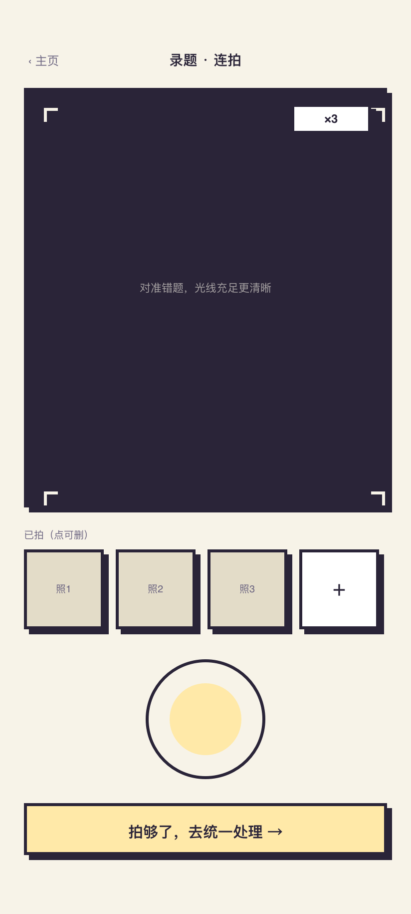
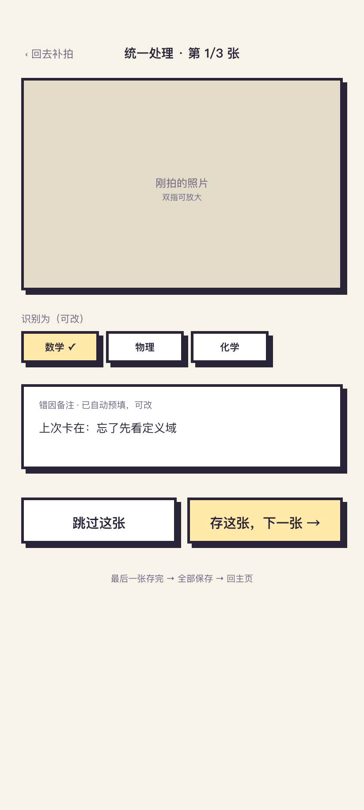
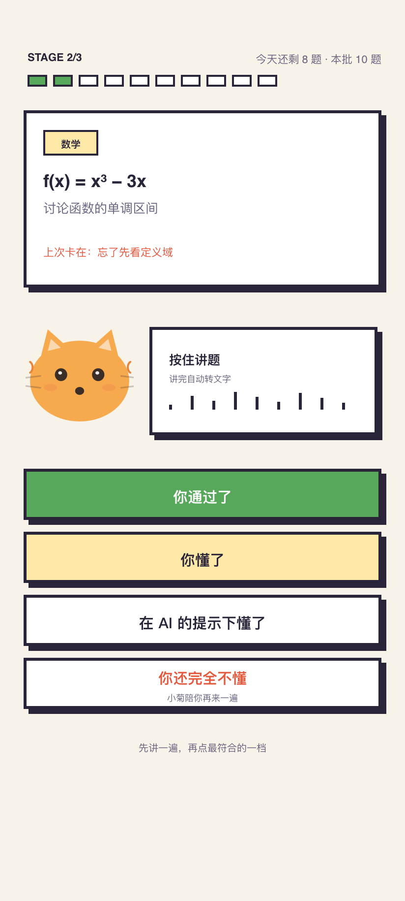
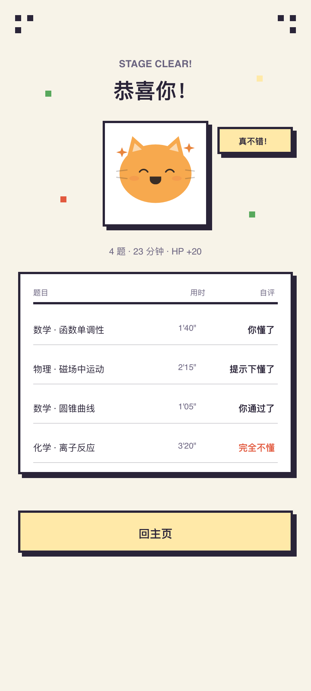
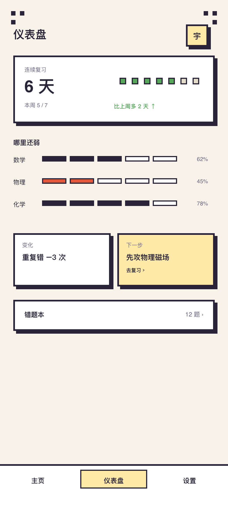
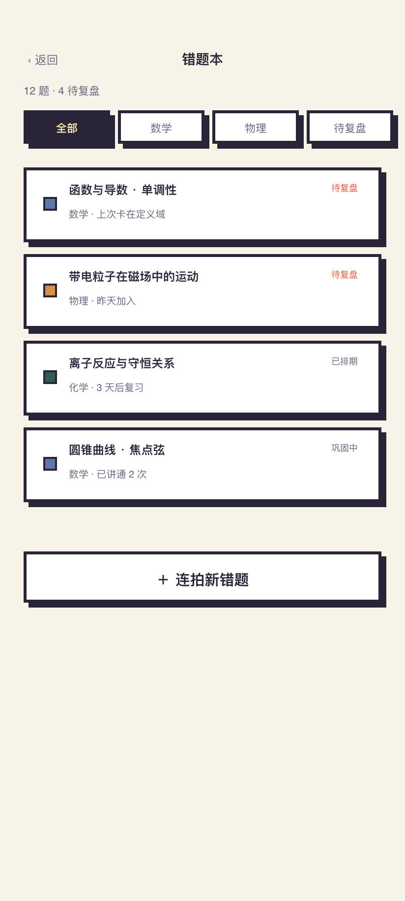
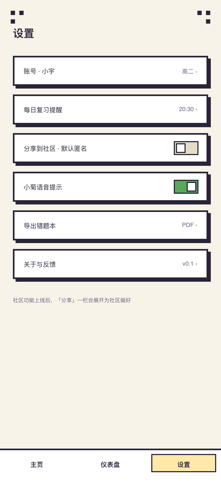
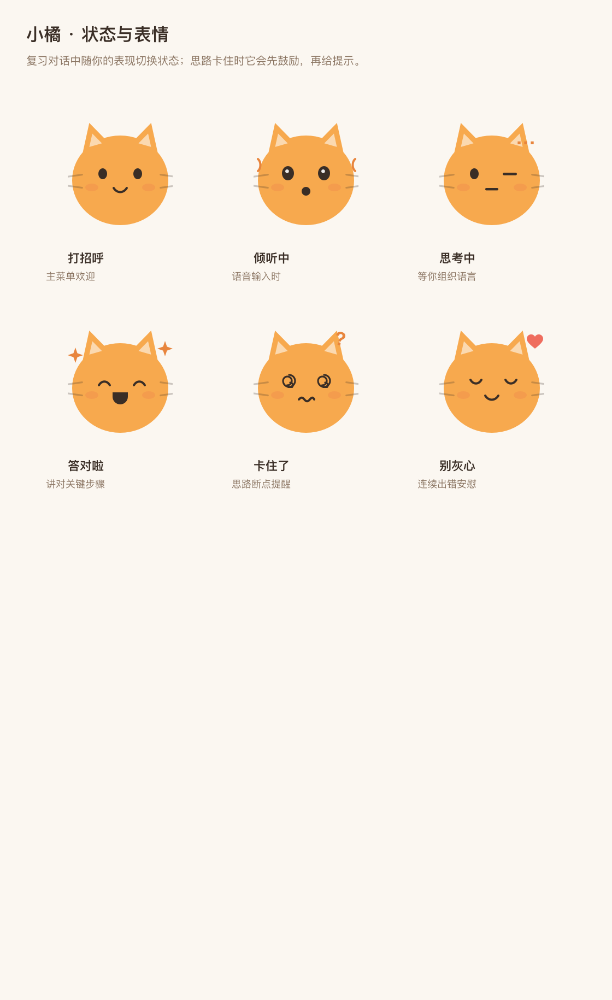

CORE LOOP
不做通用搜题，不做 AI 解题助手。错题局只做一件事——让「你自己的错误思路」被看见、被讲出来、被间隔复习真正消化掉。
连拍模式一次收多张，拍完统一处理，不打断做题节奏。
从照片中提取题目文字，原图与识别结果分开保存。
类似 Anki 的错题卡：题目 + 标准过程 + 你的思路。
当时怎么想、为什么错、下次注意什么——这才是复盘的灵魂。
只看原题不看答案，按住讲题。小菊倾听、转写、有限提示。
按作答结果安排下一次复习：做对推进，做错次日再来。
HOW IT WORKS
复习规则简单到能跟学生讲清楚；AI 是受限的复习伙伴，不是最终裁决者。
PIXEL SCREENS · G1–G8
错题是怪兽，复习是闯关。整套界面采用像素风设计：米色纸底、墨色描边、硬阴影，全部页面 412×915 画板在 Sketch 中完成，并已用 Flutter 实现。







MOTIVATION FIRST
2026-08-02 改版的激励优先设计。正确率一个月才动一次，行为每天都能动——所以首屏只放行为指标，不做负面对比。
第一眼看到的不是数据，而是「有人在等你」。文案随今日状态变化。
连续复习是主角：7 天 / 14 天 / 30 天解锁全勤徽章。断档不说「断了」，说「小菊等你回来」。
每天只有一个主按钮。完成后整卡变庆祝态：「✓ 今日已通关！」
「本周已通关 12 题」「比上周多 3 题 ↑」。负 delta 不展示，学科百分比横条移出首屏。
MASCOT
一只橘猫，六种状态。它倾听、转写、给有限提示、记录卡点——卡住时它先鼓励，再提示。

打招呼 / 倾听中 / 思考中 / 答对啦 / 卡住了 / 别灰心——六种状态在复习对话中随你的表现切换。
UNDER THE HOOD
你的数据你做主：OpenAPI 是唯一契约，MCP 适配层让你自己的 AI 用 URL + 令牌即可接入。
Flutter · Android 主终端，像素风设计 Token 由测试锁定。
模块化单体，OCR / ASR / 大模型走服务端薄适配层，官方托管，学生不碰 API Key。
WHAT WE DON'T DO
克制也是产品定义的一部分。